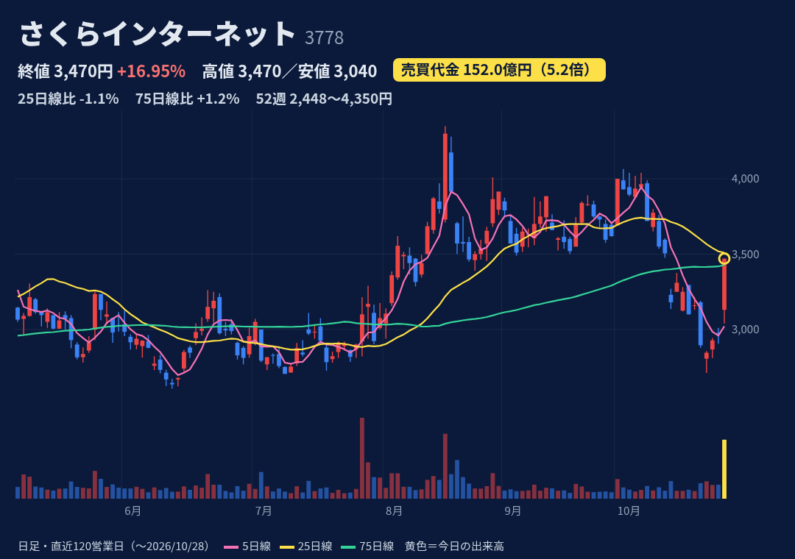
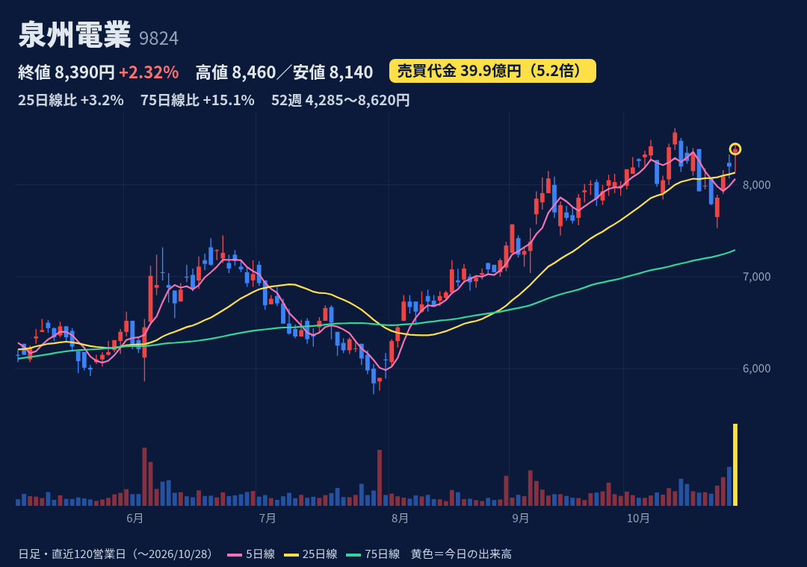
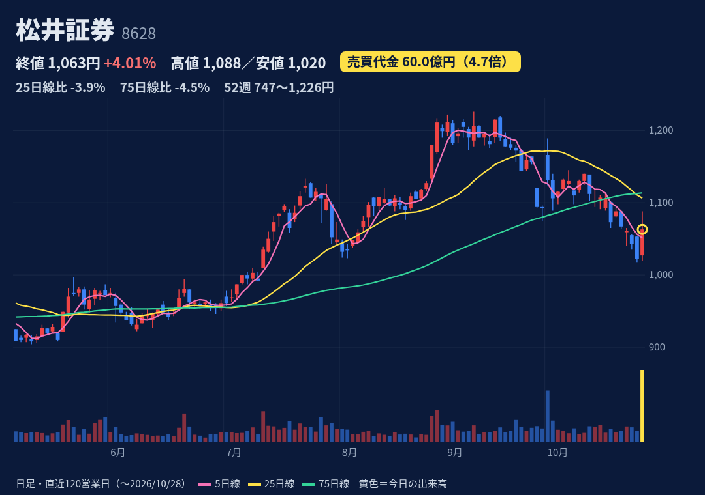
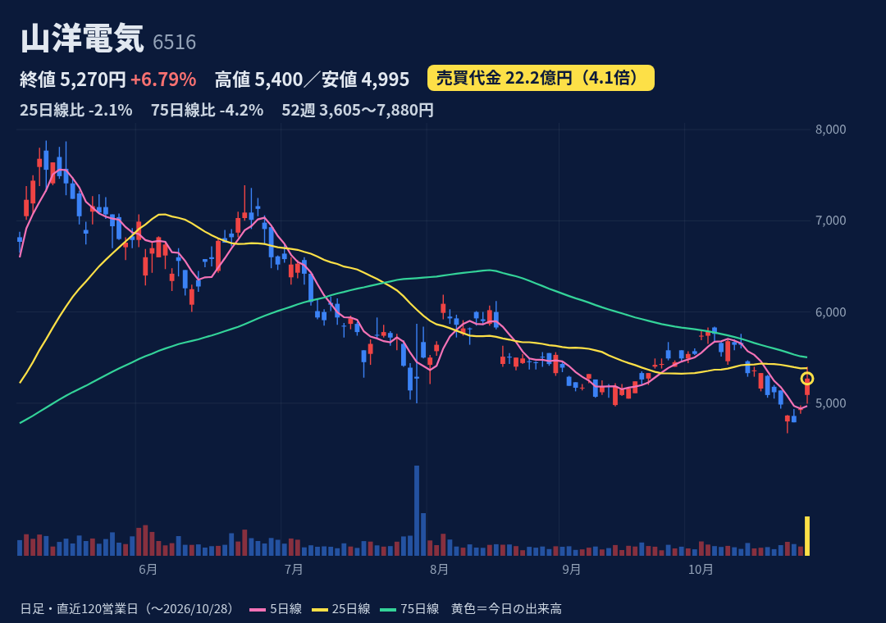
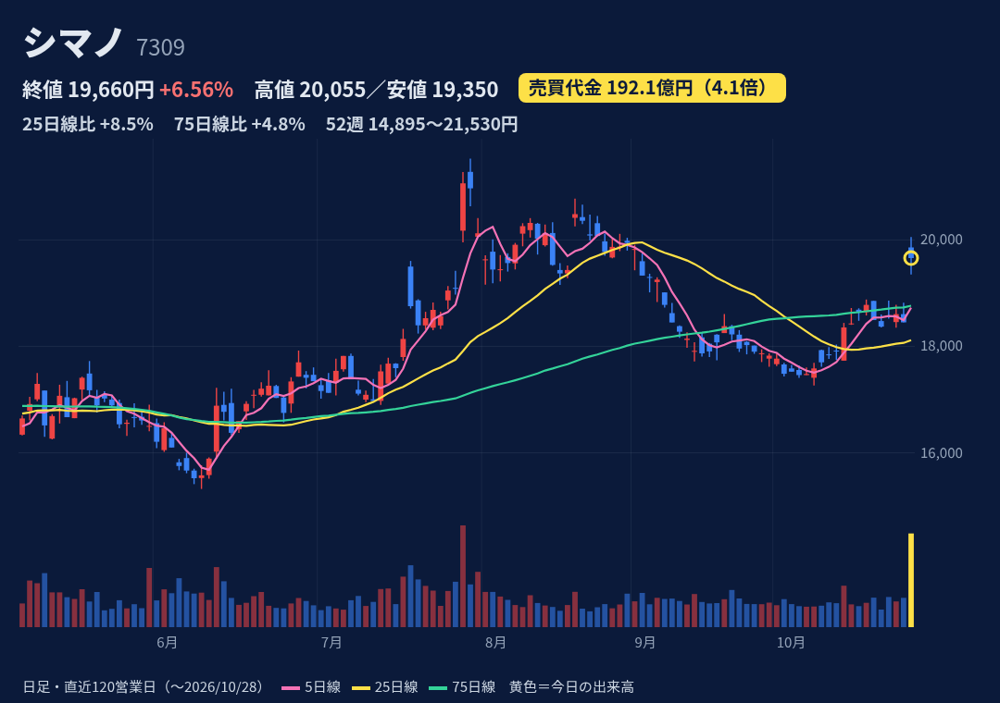
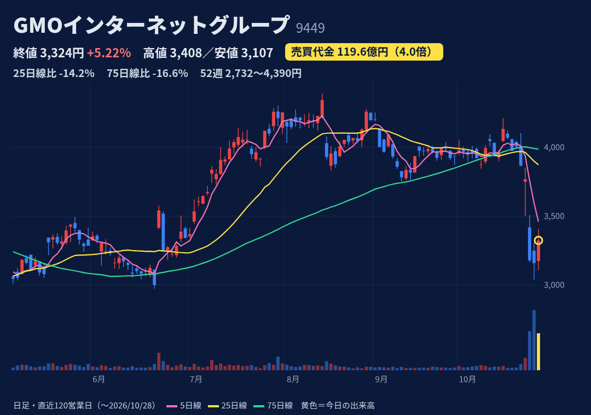

データセンター・クラウド事業者。生成AI向けGPUクラウド（GPUインフラ）が成長の柱。
10/28 12:30に中間決算を開示。上期経常30.13億円（会社予想22億円）。通期予想は営業益25→41億円・経常23→39億円に上方修正。30周年記念配当2.5円（年8円）も発表。
上期：売上228.3億円（前年比+46%）、営業益29.6億円（前年は−9.2億円の赤字）。通期予想は売上466億円・営業益41億円で、上期の進捗は72%。3Q決算は1月下旬の見込み（前年は1/30）。未確認。
始値3,130円・高値3,470円・終値3,470円。ストップ高で引けた陽線（上ヒゲなし）。52週の安値2,448円〜高値4,350円の中間（高値まで−20%）。25日線3,510円をわずかに下回り、75日線3,428円は上回る。
10/27時点：信用買残151.3万株・売残33.0万株・倍率4.58倍。買残は1週間で約10万株増え、上値の重さになり得る。日々公表・増担保はなし。
8月にレンタルサーバ等への不正アクセス事案（決算資料でも言及）。過去1年の急騰後の値動き：4/6（+17%）は20日後に−7%、8/18（+13%）は5日後に−19%。GPU投資の負担と稼働率に業績が左右される。

電線・ケーブルの専門商社（大阪）。FA・設備・半導体装置向けなどに販売。10月決算。
10/28 14:00に自社株買いを開示（上限7.5万株＝0.44%・6億円、期間11/1〜4/30）。同日は10月末の権利付最終日（優待サイト表記）。値上がりの主因かは確認できず。
3Q累計（11〜7月）：売上1,215億円（前年比+20%）、営業益95.0億円（+41%）。9/4に通期を売上1,600億円・営業益125.5億円へ上方修正し、進捗は76%。年間配当170円予想（期末90円）。本決算は12月上旬の予定（株予報）。
始値8,350円・高値8,460円・終値8,390円。小さな上ヒゲの陽線。52週高値8,620円（10/14）まで−2.7%で、レンジ上端（位置95%）。25日線より+3%、75日線より+15%上。
10/27時点：買残4.2万株・売残50.3万株・倍率0.08倍。売残は1週間で24万株から50万株に急増し、ほぼ一般信用の売り（46万株）。優待クロスの可能性がある（推測）。日々公表・増担保はなし。
10/29は権利落ち日で、期末配当90円分（約1%）の下押しが起こりやすい。権利取りと優待クロスの売買で出来高が膨らんでいる可能性があり、売買代金の倍率は割り引いて見るべき。自社株買いは0.44%と小規模。

老舗のネット証券。信用取引・一日信用に強く、収益は信用金利と手数料が中心。業績予想は開示しない。
10/28 11:30に中間決算（経常165.3億円、前年比+63%）。日経電子版が「ゆうちょ銀が出資検討」と報じ、12:55に会社は「提携検討は事実・決定事実なし」と開示。共同（14:47）は2割程度・11月上旬決定の見通しと報道。
上期：営業収益340.5億円（前年比+43%）、営業益164.8億円（+61%）、純利益104.4億円（+60%）。通期予想は非開示。中間配当28円（前年25円）。3Q決算は1月下旬の見込み（前年は1/28）。
始値1,027円・高値1,088円・終値1,063円。上ヒゲの陽線（高値から−2.3%）。52週安値747円〜高値1,226円（9/8）で、高値まで−13%。25日線1,106円・75日線1,113円の両方を下回る。
10/27時点：買残75.2万株・売残30.8万株・倍率2.44倍。買残は1週間で約5万株増加。日々公表・増担保はなし。
出資はまだ報道段階で、会社は「決定事実なし」。出資の方法（新株か既存株の譲渡か）は未公表で、新株なら希薄化の可能性。過去1年に売買代金が3倍超に急増した日（8/27・8/28・10/1）は、いずれも20日後に−6〜−10%。

冷却ファン、サーボモーター、UPS・電源装置の専業メーカー。通信装置、ロボット、半導体装置、生成AI関連向け。
10/28 15:00（取引時間中・大引けは15:30）に業績予想を修正。通期の営業益は162.9→200.2億円、税引前は166.9→200.7億円。中間配当は80→90円、年間配当予想は170→200円。修正理由は通信・FA・半導体装置・生成AI向けの需要増。
1Q：売上収益322.4億円（前年比+33%）、営業益42.1億円（約2.4倍）。修正後の通期予想は売上1,422.5億円・営業益200.2億円（前期比+84%）。中間期の営業益予想は75.7→89.6億円。中間決算は10/29の予定（株予報）。
始値5,090円・高値5,400円・終値5,270円。上ヒゲの陽線。52週安値3,430円〜高値7,880円（5/12）で、高値まで−33%。25日線5,383円・75日線5,503円の両方を下回る。15時の開示より前の値動きは未確認。
10/27時点：買残15.2万株・売残0.7万株・倍率21.1倍。買い長で、戻り売りが出やすい形。日々公表・増担保はなし。
5月高値から3割安い水準からの戻り。小〜中型株で、売買代金はふだん1日5億円台と薄い。4月下旬の決算で急騰した局面は20日後に上げ幅を縮めた前例あり（4/28起点で−0.4%）。

自転車部品の世界最大手。釣具も手がける。12月決算。
10/27 15:30（引け後）に3Q決算を開示。7〜9月の営業益は約173億円で前年同期の約2倍。通期は営業益470→543億円・経常560→623億円に修正。同時にガバナンス強化策（取締役任期を1年に短縮）も開示。
3Q累計：売上3,752億円（前年比+7%）、営業益445億円（+22%）、純利益400億円（約2.5倍）。通期予想は売上4,955億円・営業益543億円で、進捗82%。配当は年363円で据え置き。本決算は2月上旬の見込み（前年は2/10）。未確認。
始値19,860円（窓開け）・高値20,055円・終値19,660円。寄り付きより安く引けた陰線で、上ヒゲあり。52週高値21,530円（7/30）まで−8.7%。25日線より+8.5%、75日線より+4.8%上。
10/27時点：買残4.7万株・売残8.3万株・倍率0.56倍（売り長）。日々公表・増担保はなし。
7/29の2Q決算でも+10.4%（売買代金3.6倍）急騰したが、5日後に−7.7%、20日後に−5.7%と失速した前例あり。経常益は為替評価損益に左右されやすい。株予報によると、米系証券は弱気を継続し目標株価は17,000円（現値より下）。

ドメイン・サーバー・決済などのネットインフラ、ネット証券・FX、暗号資産、広告の持株会社。12月決算。
当日上昇の材料は確認できず。10/23に子会社の「お名前.comデスクトップクラウド」への不正アクセスを開示し、10/26に−15.7%。10/28 8:59に対応方針（特別見舞金、要求拒否、懸賞金100万ドル）を開示。業績への影響は算定できていない。
上期（IFRS）：売上1,586.5億円、営業益342.0億円。前年同期は日本基準のため単純比較できない。通期予想はJ-Quants上に記載なし。3Q決算は11/13の予定（株予報）。
始値3,174円・高値3,408円・終値3,324円。上ヒゲの陽線。10/21の4,005円から10/27の3,159円まで−21%下げた後の反発。52週安値2,732円〜高値4,390円で、高値まで−24%。25日線3,873円・75日線3,987円を大きく下回る。
10/27時点：買残46.5万株・売残74.0万株・倍率0.63倍。1週間で売残は2.9万株から74万株、買残は7万株から46.5万株に急増。売り残の買い戻しが反発に影響した可能性はあるが推測。日々公表・増担保はなし。
補償・見舞金（1件の公開につき上限300万円など）の総額は算定できておらず、業績予想の修正や特別損失の可能性がある。情報公開や脅迫が続いており、追加の悪材料が出る余地がある。売買代金の倍率は、急落した数日の大商いを含む平均と比べた数字。
株価・出来高・信用残：取引所データ。材料：各社開示・各社報道。